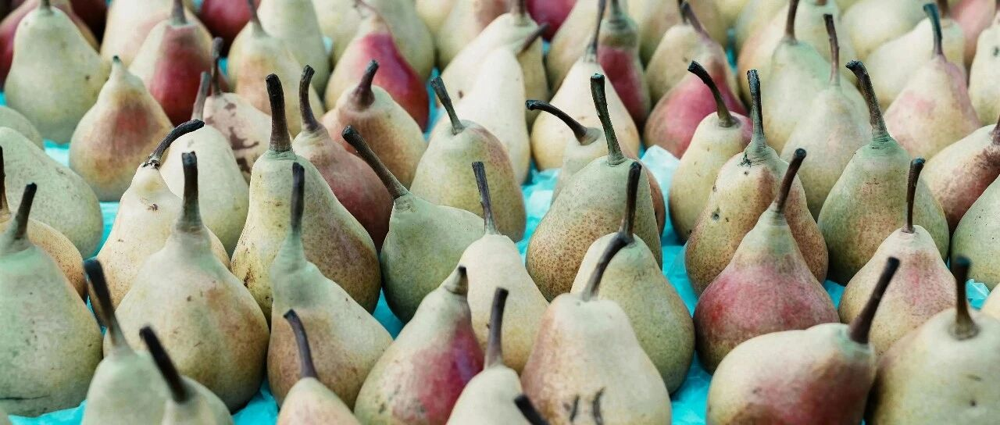

在十月的最后一天～
经过一段时间的作息调整，我生物钟调节过来了，晚上十二点前准时睡觉。
这样一来，就是个人的美股盘中交易时间变短，只能盘前或盘后操作，买卖得提前设置好，对市场的准确度要求比较高。
meta昨天升到606+后（详见昨天那篇），慢慢回调到盘中交易时间的600，收盘时595美刀。
盘后meta发布财报，三季度营收405.9亿美元，同比增长19%；每股收益为6.03美元。均高于市场预期。
但是，由于投入巨资的元宇宙部门Reality Labs亏损仍然严重，Meta然后大跌，掉回573。
Meta元宇宙这个部门主要通过销售Meta的Quest VR头戴设备和Ray-Ban Meta智能眼镜盈利。
要学会止赚。止损重要，止赚更重要。
很多人在浮盈面前会失控，想赚更多，不懂适可而止，最终浮盈变浮亏。
做短线，只吃5%涨幅，在600+及时撤退的，躲过一劫；
我是做中长线的，准备趁着meta多跌一些，加仓，现在仓位比重太低，第四季度的财报会比第三季度更好看。
微软也在上一个交易日盘后达到440美元，踩线达到我预计的3-4.5%总涨幅；盘中最高438，收盘回落到432。
盘后微软发布财报，第一财季营收达到655.9亿美元，同比增长16%；净利润为246.7亿美元；每股收益为3.30美元。均高于市场预期。
其中云计算Azure本季度增长率达到33%，其中12个百分点源自人工智能服务。包括Azure在内的“智能云”部门，总营收达240.9亿美元，同比增长20%
盘后，微软的股价一度达到442美元，随后转跌，落到415美元（截止写稿时）:

和Meta一样，做短线，根据3%预计涨幅，提前设置“止赚”撤退的，全身而退。
中长线的话，微软的股价跑输纳指，我只有8月初大跌时，在387-389美元加仓了些，后来没再买入过。
亚马逊这只股，我的预计不正确，有些偏差，原本预计5-6.5%的总涨幅，也就是要到197+美元，结果最高它只到195.61美元。
收盘时，回落到192.73美元。目前财报还没出，还有机会看能不能到197+美元。
我就不等了，在出行路上。
苹果也是，截止目前还没有出财报，但目前看趋势，偏离度应该不会大。之前写的是:
“苹果上一个交易日收盘价231.41美元，我个人预计会在这个基础波动3%左右，有可能上涨，也有可能下跌。”
几天前，在关于财报数据出来前后操作中，写过“涨幅凶猛时，抓紧套现撤退，吃一波涨幅。后续有考虑较长期持有，等回落了再去捡尸”。
也就是缝高减仓，逢低买入。不要担心买不到，很多股票都会回调，耐心等待就行。
财报数据发布前后，是市场情绪的高点，这种情绪会助推股价上涨。
所以做短线的，在达到了预期总涨幅后，不要贪心，该撤就撤，不然容易被挂东南枝上。
中长线的，更不应该去追高，应该耐心等，逢低买入，把成本做低。
我指望着这把AMD和Meta能跌到130+和550+，好加仓。如果没跌这么多，那我只考虑在相对低点，小比例买一些。
今天是十月份最后一天，我跟媳妇商量了下，让司机去接娃，我们去广州吃饭再回来，每个月总要有点私人时间。
因为这会在出行路上，所以就不蹲苹果和亚马逊的财报了，等明天再更新。
之前有读者问:资产七成在你媳妇名下，不怕她跑了吗？
这个问题，我媳妇（那会还是女朋友）当年也问过，哈哈，那会我刚赚到从创业失败的淤泥地中爬出来的第一桶金。
给她300万的时候，她笑嘻嘻问我:你不怕我拿着钱跑了吗？
我很平静地回复她:第一，你不会，不然也不会在我最困难的时候跑来做我女朋友，还倒贴一笔钱；第二，你要跑了，那就没有掌握千万、亿万资产的机会了。
她当时笑着说我自恋，还亿万资产。哈哈，现在想想也挺有意思的。
家里现在的资产，近7成，在她名下或受益人是她跟孩子。这7成的中，有一部分投资的支配权在我，另外，我手中有占比近3成的投资款。
以前机会多，这十五六年的运气也好，踩中的风口多。
慢慢地，我们从几十万，一步步做到了存款、股票、债券、保险、信托（非国内那类资金池的信托）层层配置，还有一级市场的部分公司的股权，资产的配置更趋于立体、梯次配置。
从很忙到逐渐闲下来，每个月会有点自己的私人时间。
年轻的时候，总想着拼一把，有热血，没方向；人到中年，慢慢发现，只要方向找对，钱如流水，来得快，去得也快。
最重要的，是去体验生活，去经历，去给自己的生命诠释意义。
就这样吧。